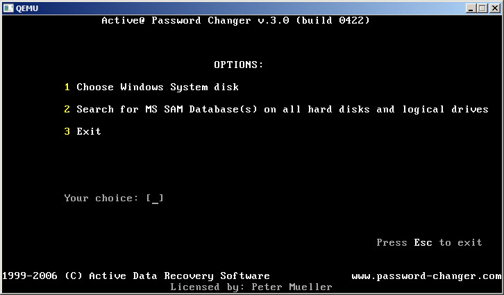
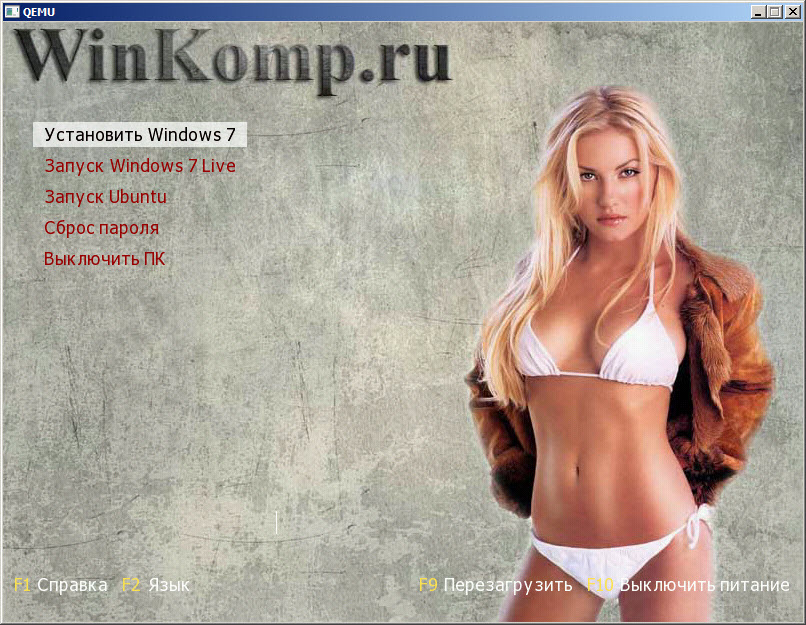

winkomp.ru
Как создать загрузочную флешку. Grub4DOS
6 March 2014 в 20:14 Комментарии: 24 Вячеслав Гердий
Продолжаю писать на тему, как создать загрузочную флешку. Но, сегодня не будут, рассмотрена очередная программа для этого дела, сегодня я расскажу, как создать загрузочную флешку используя Grub4DOS.
Я не буду особо глубоко рассказывать, что такое «Grub4DOS» В конце поста дам ссылку на Русскую документацию, на тот случай, если Вас заинтересует данный загрузчик, и Вы захотите изучить его.
По теме:
Загрузочная флешка, средствами Windows. Как создать?
Как создать загрузочную флешку с Windows 8
Создаём загрузочную флешку с Windows без проблем.
Grub4DOS – Если говорить грубо, то — Это загрузчик, который позволит нам (В данном случае) разместить на «флэшке» несколько операционных систем «Windows 7 8 XP, Ubuntu » При загрузке с «флэшки» появится, возможность выбрать и установить одну из них. Так же мы можем кинуть на «флешку» различные утилиты для проверки чего либо, например, для проверки оперативной памяти, или, утилиту для сброса пароля, и многое другое. Возможностей, одним словом много!
Если Вам интересно тема сброса пароля на вход в Windows, как на 7, так и на XP или 8 прочитайте эту статью.
Теперь приступим к задуманным планам и создадим загрузочную флешку. На USB мы размести следующие вещи:
— Windows 7 – Для её установки.
— Windows 7 Lite – Пригодится, если вдруг, сбой основной системы.
— Ubuntu – Как для установки, так и для ознакомления без неё.
Для примера этого, хватит.
Как создать загрузочную флешку на основе Grub4DOS?
Первым делом Вам нужно скачать вот этот архив. Распакуйте содержимое куда угодно и следуйте дальнейшим действиям. Ещё, не забудьте отформатировать флешку, как предлагает Windows по умолчанию, то есть в FAT 32.
Для начала необходимо сделать флешку загрузочной. В папке «GRUB» запустите файл «grubinst_gui.exe» теперь нужно правильно выбрать нашу флешку.
Будьте внимательны!!! Если Вы выберете за место флэшки системный диск, то при следующем включении ПК, Вы будет приятно удивлены. Ваша Windows не загрузится!!!
Поэтому будьте внимательны, и прочитайте дальше то же внимательно!!! Отметьте пункт «Disk» теперь в выпадающем списке выбираем флешку.
Первый вариант выбора флэшки, быстрый! Ориентируйтесь по её размеру. В данном случае, моя флэшка под цифрой (2) так как, она на 4 гига, соответственно, 3820М больше похоже на неё. Под цифрой один (1) это системный диск, вот его выбирать не нужно. Под цифрой три (3) ещё одна флешка, но мне она не нужна для дальнейших действий.
Второй вариант выбора флэшки, надёжный! В скобках каждый диск отмечен как (HD0, HD1…) поэтому идём сюда и смотрим номер каждого устройства. « ПКМ по мой компьютер > управление компьютером > управление дисками».
Видим, что флэшка находится под «Диск 1» соответственно в программе нужно выбрать «HD1» как я и сделал. «Диск 2» это моя вторая флэшка, которая не нужна и «Диск 0» это мой HDD на котором находятся «C:\ D:\» и прочие.
Теперь вы точно сможете правильно определить флешку. Как только Вы это сделали, нажимаем кнопку «INSTAL» видим консоль.
Все хорошо, нажимаем «ENTER» консоль закроется, и продолжаем дальше.Теперь из папки USB перекиньте в корень Вашей флэшки следующие файлы.
— menu.lst – Этот файл мы будем использовать для построения меню.
— grldr – Сам загрузчик, возьмите его из папки «grub4dos-0.4.6a».
— MobaLiveUSB_0.2.exe – Зачем эта программа, чуть поже!
Вот теперь наша флэшка уже загрузочная и теперь можно это проверить. Откройте файл «menu.lst» и напишите в нём следующие две строчки.
title switch off
halt
Теперь нам нужна программа «MobaLiveUSB_0.2.exe» которую мы уже скинули в корень флэшки. Она нам нужна, что бы проверять работу загрузочной флэшки. Не будем же мы постоянно перезагружать ПК или использовать виртуальную машину, что бы проверить, как работает флэшка!
Запускайте программу и в открывшемся окне жмите кнопку «Non» теперь видим, как работает флэшка!
Если нажать «ENTER» то компьютер выключится (В данном случае, закроется программа). Кстати говоря, названия пунктов меню можно менять, например, за место «switch off» можно написать, что угодно. (Но, пока Русский язык не поддерживается, за место Русских символов будет отображать, что попало. Об этом ниже)
В общем, именно так будет выглядеть загрузочная флэшка! Если перезагрузить компьютер и загрузиться с неё.
Я предлагаю исправить внешний вид флэшки на, более симпатичный и красивый!
Опять идём в папку USB и скидываем из неё файл «WinKomp.gz». теперь в самый верх файла «menu.lst» напишите строчку:
gfxmenu (hd0,0)/WinKomp.gz
Сохраните файл и проверяем, что получилось у нас после этих действий. А получится вот что!
Как видим внешний вид значительно изменился. Так на много лучше, чем смотреть на чёрный экран и белые буквы. (Теперь пункты мню можно обзывать на Русском. Возникнут проблемы пишите в комментарии )! Именно такой вид будет, когда компьютер загрузится с флэшки. Внешний вид поменялся благодаря теме, которую мы подключили «WinKomp.gz» или фоновая картинка, не знаю как правильно!
Если Вам захочется создать свою тему, то подпишитесь на обновления блога. Скоро будет пост по этой теме. А пока скачайте фотошоп!
Обновлено — Читайте, Как создают темы для grub4dos флешки!
Что мы сделали на данный момент.
— На данный момент флэшка уже загрузочная.
— Изменили внешний вид.
— Она умеет выключать компьютер. (Сделано просто так, для проверки)
Теперь давайте добавим на флешку Windows 7 что бы можно было её установить! Скачайте ISO образ Windows 7 или возьмите уже скачанный. Откройте его программой, например «UltraISO» и все файлы распакуйте в корень флэшки. Теперь снова откройте «menu.lst» и добавите туда следующие, после «gfxmenu (hd0,0)/WinKomp.gz»
title Установить Windows 7
map --unmap=0:0xff
map –unhook
root (hd0,0)
chainloader /bootmgr
Теперь, когда компьютер будет загружен с этой флэшки, можно установить «Windows 7» Опять проверяем флешку, выбираем стрелками на клавиатуре пункт «Установить Windows 7» и жмём «ENTER» смотрим, что происходит. Если установка пошла, значит все верно. Вырубаем MobaLiveUSB!
Безусловно, стоит сказать о том, что можно просто создать папку, допустим «OS» положить туда цельный iso образ Windows и запустить установку, таким образом, и не нужно не чего распаковывать в корень флэшки!
Можно, но тут нас будет ждать проблема. В процессе установки, после выбора языка появится ошибка, что не получается найти «CDROM» в этом случаи придётся качать виртуальный драйвер «CDROM-а» и устанавливать его руками в процессе установки используя «cmd». Так же этот процесс можно автоматизировать, но об этом не в рамках этого поста.
Добавим – Windows 7 Live. Я не стал замораживаться, скачал то, что, первое на глаз попалось. Подробнее о «Win 7 Live» можно прочитать тут и там же скачать.
Создадим в корне флэшки папку и дадим ей имя, например «OS» закинем в неё «ISO образ — Win 7 Live» далее открываем все то же «menu.lst» и пропишем в нём.
title Запуск Windows 7 Live
map /OS/Win7-Live.iso (0xFF) || /OS/Win7-Live.iso (0xFF)
map –hook
chainloader (0xFF)
Заметьте! ISO образ должен иметь название «Win7-Live.iso» или переименуйте его и измените запись во второй строке! Теперь если основная система убьётся, можно запустить Live и выполнить действия по обстоятельствам.
Добавим – Ubuntu. Что бы запустить Ubuntu для ознакомления без установки или установить её добавьте следующие в файл меню.
title Запуск Ubuntu
find --set-root /OS/ ubuntu.iso
map /OS/ubuntu.iso (0xff)
map –hook
root (0xff)
kernel /casper/vmlinuz file=cdrom/preseed/ubuntu.seed noprompt boot=casper persistent floppy.allowed_drive_mask=0 ignore_uuid iso-scan/filename=/OS/ ubuntu.iso splash -- locale=ru_RU.UTF-8
initrd /casper/initrd.lz
Образ Ubuntu ISO должен лежать в папке «OS» а так же иметь имя «ubuntu.iso» В прицепи не чего особенного! Выбираем «Запуск Ubuntu» когда она загрузится, в ней можно полноценно работать или установить, для этого на рабочем столе имеется соответствующий значок, ярлык, кому как удобно…
Добавим программу на флешку! Предлагаю ещё закинуть программу, для сброса пароля пользователя. Названия программы «Active Password Changer» Из папки «USB/ soft» скиньте на флешку «Pwd-changer-boot-cd.iso» и в файл меню пишем.
title Сброс пароля
map (hd0,0)/soft/Pwd-changer-boot-cd.ISO (hd32)
map –hook
root (hd32)
chainloader (hd32)
boot
Как Вы уже могли заметить, программа должна лежать в папке «soft» и иметь имя «Pwd-changer-boot-cd.ISO» теперь если что, можно воспользоваться флэшкой и скинуть пароль от своей или чужой учетной записи.
Это не та программа, о которой шла речь в прошлом посте. Эта, думаю, намного проще и удобнее, понятна для использования. О ней будет пост, !
Можно запустить «MobaLiveUSB» и проверить, как работает. Запускаем и выбираем пункт «Сброс пароля» и смотри, работает программа или нет. Как видно на картинке ниже, все хорошо работает.

Теперь внешний вид загрузочной флэшки при загрузки компьютера с неё будет выглядеть вот таким образом.

Теперь Вам известен ещё один отличный способ, как создать загрузочную флешку, причем мульти загрузочная с несколькими системами, с программами на всякий случай жизни. В данном посте, я только постарался описать все как можно подробнее, описать ключевые моменты!
В одном посте не возможно рассказать все про «grub4dos» об этом можно заводить целый блог.
На этом я буду заканчивать этот пост, надеюсь, мой рассказ был понятен и полезен для Вас! Напомню – будьте аккуратны при выборе флэшки в программе «grubinst_gui».
Если будите экспериментировать, то настоятельно рекомендую использоваться виртуальную машину. Об этом можно почитать тут и тут.
Привожу ссылку на Русскоязычную документацию.
http://greenflash.su/Grub4Dos/Grub4dos.htm
6 March 2014 в 20:14 Комментарии: 24 Вячеслав Гердий